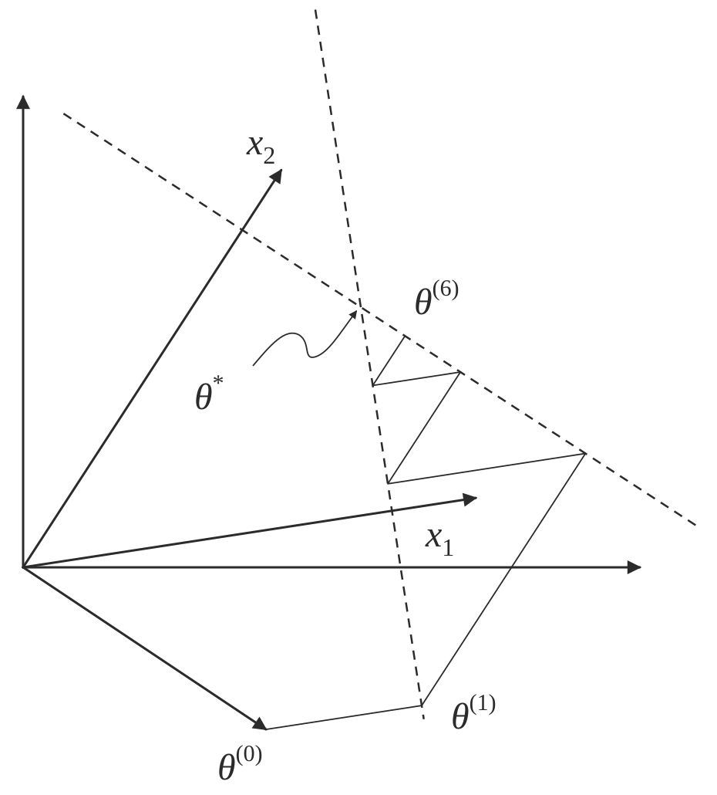
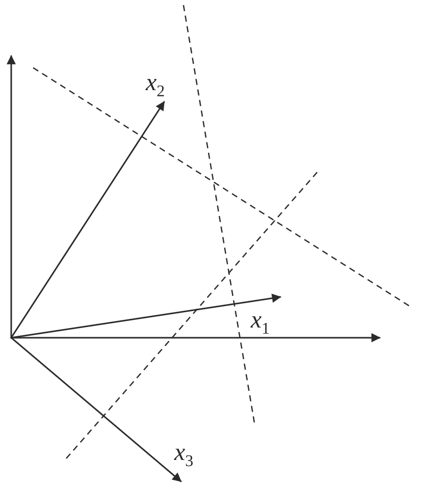
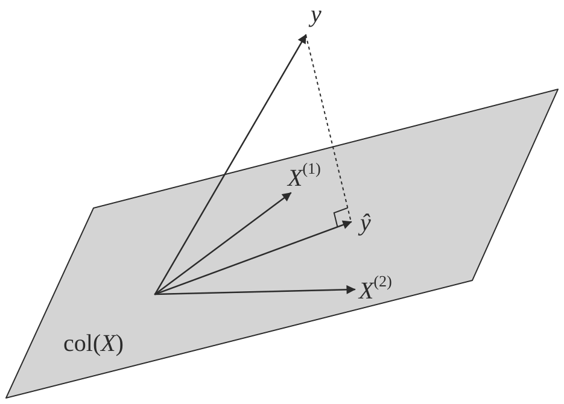

4.7. linear models#
4.7.1. introduction#
\(Y = X \beta + \epsilon\)
type of linear regression
X
Y
simple
univariate
univariate
multiple
multivariate
univariate
multivariate
either
multivariate
generalized
either
error not normal
minimize: $\(L(\theta) = \vert \vert Y-X\beta\vert \vert _2^2 \implies \hat{\theta} = (X^TX)^{-1} X^TY\)$
2 proofs
set deriv and solve
use projection matrix H to show HY is proj of Y onto R(X)
the projection matrix maps the responses to the predictions: \(\hat{y} = Hy\)
define projection (hat) matrix \(H = X(X^TX)^{-1} X^T\)
show $\(\vert \vert Y-X \theta\vert \vert ^2 \geq \vert \vert Y - HY\vert \vert ^2\)$
key idea: subtract and add \(HY\)
interpretation
if feature correlated, weights aren’t stable / can’t be interpreted
curvature inverse \((X^TX)^{-1}\) - dictates stability
feature importance = weight * feature value
LS doesn’t work when p >> n because of colinearity of X columns
assumptions
\(\epsilon \sim N(X\beta,\sigma^2)\)
homoscedasticity: $\(\text{var}(Y_i\vert X)\)$ is the same for all i
opposite is heteroscedasticity
normal linear regression
variance MLE \(\hat{\sigma}^2 = \sum (y_i - \hat{\theta}^T x_i)^2 / n\)
in unbiased estimator, we divide by n-p
LS has a distr. \(N(\theta, \sigma^2(X^TX)^{-1})\)
linear regression model
when n is large, LS estimator ahs approx normal distr provided that X^TX /n is approx. PSD
weighted LS: minimize \(\sum [w_i (y_i - x_i^T \theta)]^2\)
\(\hat{\theta} = (X^TWX)^{-1} X^T W Y\)
heteroscedastic normal lin reg model: erorrs ~ N(0, 1/w_i)
leverage scores - measure how much each \(x_i\) influences the LS fit
for data point i, \(H_{ii}\) is the leverage score
LAD (least absolute deviation) fit
MLE estimator when error is Laplacian
4.7.2. freedman notes#
4.7.2.1. regularization#
when \((X^T X)\) isn’t invertible can’t use normal equations and gradient descent is likely unstable
X is nxp, usually n >> p and X almost always has rank p
problems when n < p
intuitive way to fix this problem is to reduce p by getting rid of features
a lot of papers assume your data is already zero-centered
conventionally don’t regularize the intercept term
ridge regression (L2)
if \(X^T X\) is not invertible, add a small element to diagonal
then it becomes invertible
small lambda -> numerical solution is unstable
proof of why it’s invertible is difficult
argmin \(\cblue{\sum_i (y_i - \hat{y_i})^2}+ \corange{\lambda \vert \vert \beta\vert \vert _2^2}\)
equivalent to minimizing \(\sum_i (y_i - \hat{y_i})^2\) s.t. \(\sum_j \beta_j^2 \leq t\)
solution is \(\hat{\beta_\lambda} = (X^TX+\corange{\lambda I})^{-1} X^T y\)
for small \(\lambda\) numerical solution is unstable
When \(X^TX=I\), $\(\beta _{Ridge} = \frac{1}{1+\lambda} \beta_{Least Squares}\)$
lasso regression (L1)
\(\cblue{\sum_i (y_i - \hat{y_i})^2}+\corange{\lambda \vert \vert \beta\vert \vert _1}\)
equivalent to minimizing \(\sum_i (y_i - \hat{y_i})^2\) s.t. \(\sum_j \vert \beta_j\vert \leq t\)
lasso - least absolute shrinkage and selection operator - L1
acts in a nonlinear manner on the outcome y
keep the same SSE loss function, but add constraint of L1 norm
doesn’t have closed form for Beta
because of the absolute value, gradient doesn’t exist
can use directional derivatives
good solver is LARS - least angle regression
if tuning parameter is chosen well, will set lots of coordinates to 0
convex functions / convex sets (like circle) are easier to solve
disadvantages
if p>n, lasso selects at most n variables
if pairwise correlations are very high, lasso only selects one variable
elastic net - hybrid of the other two
\(\beta_{Naive ENet} = \cblue{\sum_i (y_i - \hat{y_i})^2}+\corange{\lambda_1 \vert \vert \beta\vert \vert _1} + \cgreen{\lambda_2 \vert \vert \beta\vert \vert _2^2}\)
l1 part generates sparse model
l2 part encourages grouping effect, stabilizes l1 regularization path
grouping effect - group of highly correlated features should all be selected
naive elastic net has too much shrinkage so we scale \(\beta_{ENet} = (1+\lambda_2) \beta_{NaiveENet}\)
to solve, fix l2 and solve lasso
4.7.2.2. the regression line (freedman ch 2)#
regression line
goes through \((\bar{x}, \bar{y})\)
slope: \(r s_y / s_x\)
intercept: \(\bar{y} - slope \cdot \bar{x}\)
basically fits graph of averages (minimizes MSE)
SD line
same except slope: \(\operatorname{sign}(r) s_y / s_x\)
intercept changes accordingly
for regression, MSE = \((1-r^2) Var(Y)\)
4.7.2.3. multiple regression (freedman ch 4)#
assumptions
assume \(n > p\) and X has full rank (rank p - columns are linearly independent)
\(\epsilon_i\) are iid, mean 0, variance \(\sigma^2\)
\(\epsilon\) independent of \(X\)
\(e_i\) still orthogonal to \(X\)
OLS is conditionally unbiased
- \[E[\hat{\theta} \vert X] = \theta$$<!-- --> - $$Cov(\hat{\theta}\vert X) = \sigma^2 (X^TX)^{-1}$$<!-- --> - $\hat{\sigma^2} = \frac{1}{n-p} \sum_i e_i^2$ - this is unbiased - just dividing by n is too small since we have minimized $e_i$ so their variance is lower than var of $\epsilon_i$ - *random errors* $\epsilon$ - *residuals* $e$ - $H = X(X^TX)^{-1} X^T$ 1. e = (I-H)Y = $(I-H) \epsilon$ 2. H is symmetric 3. $H^2 = H, (I-H)^2 = I-H$ 4. HX = X 5. $e \perp X$ - basically H projects Y int R(X) - $$E[\hat{\sigma^2}\vert X] = \sigma^2$$<!-- --> - random errs don't need to be normal - variance - $\cpurple{var(Y)} = \cblue{var(X \hat{\theta})} + \corange{var(e)}$ - $\cblue{var(X \hat{\theta})}$ is the <span class="cblue">explained variance</span>, $\corange{var(e)}$ is the <span class="corange">residual variance</span> - *fraction of variance explained*: $R^2 = \cblue{var(X \hat{\theta})} / \cpurple{var(Y)}$ - like summing squares by projecting - if there is no intercept in a regression eq, $$R^2 = \vert \vert \hat{Y}\vert \vert ^2 / \vert \vert Y\vert \vert ^2\]
4.7.3. advanced topics#
4.7.3.1. BLUE#
drop assumption: \(\epsilon\) independent of \(X\)
instead: $\(E[\epsilon\vert X]=0, cov[\epsilon\vert X] = \sigma^2 I\)$
can rewrite: \(E[\epsilon]=0, cov[\epsilon] = \sigma^2 I\) fixing X
Gauss-markov thm - assume linear model and assumption above: when X is fixed, OLS estimator is BLUE = best linear unbiased estimator
has smallest variance.
prove this
4.7.3.2. GLS = GLM#
GLMs roughly solve the problem where outcomes are non-Gaussian
mean is related to \(w^tx\) through a link function (ex. logistic reg assumes sigmoid)
also assume different prob distr on Y (ex. logistic reg assumes Bernoulli)
generalized least squares regression model: instead of above assumption, use $\(E[\epsilon\vert X]=0, cov[\epsilon\vert X] = G, \: G \in S^K_{++}\)$
covariance formula changes: $\(cov(\hat{\theta}_{OLS}\vert X) = (X^TX)^{-1} X^TGX(X^TX)^{-1}\)$
estimator is the same, but is no longer BLUE - can correct for this: \((G^{-1/2}Y) = (G^{-1/2}X)\theta + (G^{-1/2}\epsilon)\)
feasible GLS=Aitken estimator - use \(\hat{G}\)
examples
simple
iteratively reweighted
3 assumptions can break down:
if $\(E[\epsilon\vert X] \neq 0\)$ - GLS estimator is biased
else if $\(cov(\epsilon\vert X) \neq G\)$ - GLS unbiased, but covariance formula breaks down
if G from data, but violates estimation procedure, estimator will be misealding estimate of cov
4.7.3.3. path models#
path model - graphical way to represent a regression equation
making causal inferences by regression requires a response schedule
4.7.3.4. simultaneous equations#
simultaneous-equation models - use instrumental variables / two-stage least squares
these techniques avoid simultaneity bias = endogeneity bias
4.7.3.5. binary variables#
indicator variables take on the value 0 or 1
dummy coding - matrix is singular so we drop the last indicator variable - called reference class / baseline class
effect coding
one vector is all -1s
B_0 should be weighted average of the class averages
orthogonal coding
additive effects assume that each predictor’s effect on the response does not depend on the value of the other predictor (as long as the other one was fixed
assume they have the same slope
interaction effects allow the effect of one predictor on the response to depend on the values of other predictors.
\(y_i = β_0 + β_1x_{i1} + β_2x_{i2} + β_3x_{i1}x_{i2} + ε_i\)
4.7.3.6. LR with non-linear basis functions#
can have nonlinear basis functions (ex. polynomial regression)
radial basis function - ex. kernel function (Gaussian RBF)
\(\exp(-(x-r)^2 / (2 \lambda ^2))\)
non-parametric algorithm - don’t get any parameters theta; must keep data
4.7.3.7. locally weighted LR (lowess)#
recompute model for each target point
instead of minimizing SSE, we minimize SSE weighted by each observation’s closeness to the sample we want to query
4.7.3.8. kernel regression#
nonparametric method
- \[ \begin{align}\begin{aligned}\operatorname{E}(Y \vert X=x) = \int y f(y\vert x) dy = \int y \frac{f(x,y)}{f(x)} dy$$<!-- -->\\ Using the kernel density estimation for the joint distribution ''f(x,y)'' and ''f(x)'' with a kernel '''''K''''',\\ $\hat{f}(x,y) = \frac{1}{n}\sum_{i=1}^{n} K_h\left(x-x_i\right) K_h\left(y-y_i\right)$ $\hat{f}(x) = \frac{1}{n} \sum_{i=1}^{n} K_h\left(x-x_i\right)$\\ we get\\\begin{split} $$\begin{align} \operatorname{\hat E}(Y \vert X=x) &= \int \frac{y \sum_{i=1}^{n} K_h\left(x-x_i\right) K_h\left(y-y_i\right)}{\sum_{j=1}^{n} K_h\left(x-x_j\right)} dy,\\ &= \frac{\sum_{i=1}^{n} K_h\left(x-x_i\right) \int y \, K_h\left(y-y_i\right) dy}{\sum_{j=1}^{n} K_h\left(x-x_j\right)},\\ &= \frac{\sum_{i=1}^{n} K_h\left(x-x_i\right) y_i}{\sum_{j=1}^{n} K_h\left(x-x_j\right)},\end{align}$$<!-- -->\end{split}\\### GAM = generalized additive model\\- generalized additive models: assume mean output is sum of functions of individual variables (no interactions) - learn individual functions using splines - $$g(\mu) = b + f(x_0) + f(x_1) + f(x_2) + ...$$<!-- --> - can also add some interaction terms (e.g. $f(x_0, x_1)$)\\### multicollinearity\\- *multicollinearity* - predictors highly correlated - this affects fitted coefficients, potentially changing their values and even flipping their sign - *variance inflation factor (VIF)* for a feature $X_j$ is $\frac{1}{1-R_j^2}$, where $R_j^2$ is obtained by predicting $X_j$ from all features excluding $X_j$ - this measures the impact of multicollinearity on a feature coefficient - Studying - Variable Selection via Nonconcave Penalized Likelihood and Its Oracle Properties ([fan & li, 2001](https://www.jstor.org/stable/3085904)) - frame an estimator as "oracle" if: - it can correctly select the nonzero coefficients in a model with prob converging to one - and if the nonzero coefficients are asymptotically normal - AdaLasso: The Adaptive Lasso and Its Oracle Properties ([zou, 2006](http://users.stat.umn.edu/~zouxx019/Papers/adalasso.pdf)) - can make lasso ""oracle" in the sense above by weighting each coef in the optimization - appropriate weight for each feature $X_j$ is simply $1/ \hat{\beta_j}$, where we attain $\beta_j$ from fitting OLS with no weights - using marginal regression - A Comparison of the Lasso and Marginal Regression ([genovese...yao, 2011](https://www.stat.cmu.edu/~jiashun/Research/Area/Marginal.pdf)) - Revisiting Marginal Regression ([genovese, jin, & wasserman, 2009](https://arxiv.org/abs/0911.4080)) - Exact Post Model Selection Inference for Marginal Screening ([jason lee & taylor, 2014](https://proceedings.neurips.cc/paper/2014/hash/a0a080f42e6f13b3a2df133f073095dd-Abstract.html)) - SIS: Sure independence screening for ultrahigh dimensional feature space ([fan & lv, 2008](https://rss.onlinelibrary.wiley.com/doi/10.1111/j.1467-9868.2008.00674.x), 2k+ citations) - 2 steps (sometimes iterate these) 1. Feature selection - select marginal features with largest absolute coefs (pick some threshold) 2. Fit Lasso on selected features - Followups - Sure independence screening in generalized linear models with NP-dimensionality ([fan & song, 2010](https://projecteuclid.org/journals/annals-of-statistics/volume-38/issue-6/Sure-independence-screening-in-generalized-linear-models-with-NP-dimensionality/10.1214/10-AOS798.full)) - Nonparametric independence screening in sparse ultra-high-dimensional additive models ([fan, feng, & song, 2011](https://www.tandfonline.com/doi/abs/10.1198/jasa.2011.tm09779)) - RAR: Regularization after retention in ultrahigh dimensional linear regression models ([weng, feng, & qiao, 2017](https://arxiv.org/abs/1311.5625)) - only apply regularization on features not identified to be marginally important - Regularization After Marginal Learning for Ultra-High Dimensional Regression Models ([feng & yu, 2017](https://yangfeng.hosting.nyu.edu/publication/feng-2017-regularization/feng-2017-regularization.pdf)) - introduces 3-step procedure using a retention set, noise set, and undetermined set\\## sums interpretation\\- <span class="cpurple">SST</span> - total sum of squares - measure of total variation in response variable - $\sum(y_i-\bar{y})^2$ - <span class="cblue">SSR</span> - regression sum of squares - measure of variation explained by predictors - $\sum(\hat{y_i}-\bar{y})^2$ - <span class="corange">SSE</span> - measure of variation not explained by predictors - $\sum(y_i-\hat{y_i})^2$ - <span class="cpurple">SST</span> = <span class="cblue">SSR</span> + <span class="corange">SSE</span> - $R^2 = \frac{\cblue{SSR}}{\cpurple{SST}}$ - coefficient of determination - measures the proportion of variation in Y that is explained by the predictor\\## geometry - Jordan ch 6\\from Michael Jordan's "An Introduction to Probabilistic Graphical Models"\\- *LMS* = *least mean squares* (p-dimensional geometries) - <img style="width: 460px; max-width: 100%;" src="../assets/j6_1.svg" alt="Geometry of the LMS algorithm"/> - $y_n = \theta^T x_n + \epsilon_n$ - $\theta^{(t+1)}=\cblue{\theta^{(t)}} + \corange{\alpha} \cgreen{(y_n - \theta^{(t)T} x_n)} x_n$ - <span class="cblue">old weights</span> + <span class="corange">step size</span> * <span class="cgreen">prediction error</span> * input - converges if $$0 < \corange{\alpha} < 2/\vert \vert x_n\vert \vert ^2\end{aligned}\end{align} \]
geometry of LMS with two input vectors $\(x_1\)\( and \)\(x_2\)\(, each with a line of solutions; the lines intersect at \)\(\theta^*\)\(, which solves the problem for both, and the path shows LMS on repeated presentations of \)\(x_1\)\( and \)\(x_2\)$


if N=p and all \(x^{(i)}\) are lin. indepedent, then there exists exact solution \(\theta\)
solving requires finding orthogonal projection of y on column space of X (n-dimensional geometries)

3 Pfs
geometry - \(y-X\theta^*\) must be orthogonal to columns of X: \(X^T(y-X\theta)=0\)
minimize least square cost function and differentiate
show HY projects Y onto col(X)
either of these approaches yield the normal eqns: \(X^TX \theta^* = X^Ty\)
SGD
SGD converges to normal eqn
convergence analysis: requires \(0 < \rho < 2/\lambda_{\max} [X^TX]\)
algebraic analysis: expand \(\theta^{(t+1)}\) and take \(t \to \infty\)
geometric convergence analysis: consider contours of loss function
weighted least squares: \(J(\theta)=\frac{1}{2}\sum_n w_n (y_n - \theta^T x_n)^2\)
yields \(X^T WX \theta^* = X^T Wy\)
probabilistic interpretation
$\(p(y\vert x, \theta) = \frac{1}{(2\pi\sigma^2)^{N/2}} \exp \left( \frac{-1}{2\sigma^2} \cblue{\sum_{n=1}^N (y_n - \theta^T x_n)^2} \right)\)$
\(l(\theta; x,y) = - \frac{1}{2\sigma^2} \cblue{\sum_{n=1}^N (y_n - \theta^T x_n)^2}\)
log-likelihood is equivalent to least-squares cost function
4.7.4. likelihood calcs#
4.7.4.1. normal equation#
\(L(\theta) = \frac{1}{2} \sum_{i=1}^n (\hat{y}_i-y_i)^2\)
\(L(\theta) = 1/2 (X \theta - y)^T (X \theta -y)\)
\(L(\theta) = 1/2 (\theta^T X^T - y^T) (X \theta -y)\)
\(L(\theta) = 1/2 (\theta^T X^T X \theta - 2 \theta^T X^T y +y^T y)\)
\(0=\frac{\partial L}{\partial \theta} = 2X^TX\theta - 2X^T y\)
\(X^Ty=X^TX\theta\)
\(\theta = (X^TX)^{-1} X^Ty\)
4.7.4.2. ridge regression#
\(L(\theta) = \cblue{\sum_{i=1}^n (\hat{y}_i-y_i)^2}+ \corange{\lambda \vert \vert \theta\vert \vert _2^2}\)
\(L(\theta) = \cblue{(X \theta - y)^T (X \theta -y)}+ \corange{\lambda \theta^T \theta}\)
\(L(\theta) = \cblue{\theta^T X^T X \theta - 2 \theta^T X^T y +y^T y} + \corange{\lambda \theta^T \theta}\)
\(0=\frac{\partial L}{\partial \theta} = \cblue{2X^TX\theta - 2X^T y}+\corange{2\lambda \theta}\)
\(\theta = (X^TX+\corange{\lambda I})^{-1} X^T y\)
data fit + penalty